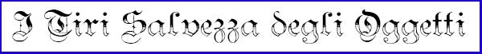

LA ROTTURA DEGLI OGGETTI
Nel corso delle avventure e della battaglie può accadere che gli oggetti posseduti da un personaggio si rompano. Le seguenti regole sono appunto ideate per verificare quando un oggetto, che subisca un colpo o sia sottoposto ad una forza distruttrice, si rompa.
Quando accade una situazione in base alla quale deve verificarsi se uno o più oggetti sono stati distrutti gli stessi devono superare un tiro salvezza contro rottura tirando un dado da 20. Se il tiro è uguale o superiore a quello richiesto l'oggetto non sarà rotto né danneggiato, se invece il tiro è inferiore l'oggetto sarà definitivamente distrutto.
Si noti che qualora gli oggetti siano contenuti in un contenitore (si pensi ad uno zaino, una sacca, un porta pergamena) dovranno seguirsi le seguenti regole che dipendono dalla tipologia di danno e contenitore:
|
Acido: tutti gli oggetti contenuti dovranno superare un tiro salvezza contro rottura nel caso in cui il contenitore risulti rotto dall'acido; altrimenti gli oggetti saranno tenuti al tiro salvezza solo in caso di infiltrazione di acido nel contenitore, in questo caso, però, gli oggetti otterranno un bonus di +1 al tiro salvezza. Si noti che in caso di immersione del contenitore nel liquido l'infiltrazione risulterà automatica. |
| Fuoco: gli oggetti contenuti dovranno superare un tiro salvezza contro rottura solo nel caso in cui il contenitore risulti rotto dal fuoco. |
| Calore: tutti gli oggetti contenuti dovranno superare un tiro salvezza contro rottura. Nel caso in cui il contenitore abbia resistito al calore il tiro salvezza di tutti gli oggetti in esso contenuti otterrà un bonus di +2. |
| Freddo: tutti gli oggetti contenuti dovranno superare un tiro salvezza contro rottura. Nel caso in cui il contenitore abbia resistito al freddo il tiro salvezza di tutti gli oggetti in esso contenuti otterrà un bonus di +2. |
| Acqua: tutti gli oggetti contenuti dovranno superare un tiro salvezza contro rottura nel caso in cui il contenitore risulti rotto dall'acqua; altrimenti gli oggetti saranno tenuti al tiro salvezza solo in caso di infiltrazione di acido nel contenitore, in questo caso, però, gli oggetti otterranno un bonus di +1 al tiro salvezza. Si noti che in caso di immersione del contenitore nel liquido l'infiltrazione risulterà automatica. |
| Elettricità: tutti gli oggetti contenuti dovranno superare un tiro salvezza contro rottura. Nel caso in cui il contenitore abbia resistito alla corrente elettrica, il tiro salvezza di tutti gli oggetti in esso contenuti otterrà un bonus che dipende dalla capacità di conduttore dello stesso: buon conduttore (metallo) bonus di +1; pessimo conduttore (cuoio, legno, stoffa) bonus di +3. |
| Impatto: se il contenitore è rigido tutti gli oggetti contenuti dovranno superare un tiro salvezza contro rottura solo nel caso in cui il contenitore risulti rotto dall'impatto; se il contenitore è morbido o flessibile tutti gli oggetti contenuti dovranno superare in ogni caso un tiro salvezza ricevendo un bonus di +1 allo stesso nel caso in cui il contenitore abbia resistito all'impatto. |
SITUAZIONI CHE RICHIEDONO UN TIRO SALVEZZA
Tutti gli oggetti trasportati od indossati dai personaggi devono effettuare un tiro salvezza al verificarsi di ognuna delle seguenti situazioni:
* Quando il personaggio subisce un qualsiasi effetto in base al quale è espressamente previsto che uno o più suoi oggetti effettuino un tiro salvezza contro rottura.
* Quando il personaggio subisce un impatto distruttivo. Si considererà un impatto distruttivo l'impatto di un corpo di grosse dimensioni (si pensi ad un grosso macigno od ad un colpo di una catapulta e comunque di un oggetto che misuri almeno mezzo metro di diametro) che provochi un ammontare di danni almeno pari a 15 (si noti che dovrà considerarsi il danno provocato dall'attacco senza eventuali riduzioni od aumenti dovuti a resistenze o sensibilità possedute dal personaggio). In questo caso, se il personaggio ha diritto ad un tiro salvezza per dimezzare od altrimenti ridurre i danni subiti, i suoi oggetti dovranno effettuare un tiro salvezza contro rottura solo qualora costui fallisca il tiro salvezza concesso. Qualora, invece, il personaggio non ha diritto ad alcun tiro salvezza, tutti i suoi oggetti dovranno effettuare in ogni caso il previsto tiro salvezza contro rottura. Può considerarsi un impatto distruttivo anche l'attacco di una creature di taglia Huge o Gargantuan effettuato con armi da botta od attacchi fisici assimilabili (si pensi al macigno scagliato da un gigante od ad un suo colpo di clava). In questo caso, però, perché l'attacco possa danneggiare gli oggetti del personaggio occorre che, oltre a provocare almeno 15 danni, la creatura abbia colpito a pieno il personaggio superando di 5 o più punti la sua classe armatura.
* Quando il personaggio subisce un attacco elementale direzionato direttamente contro costui che provochi un ammontare di danni almeno pari a 15 (si noti che dovrà considerarsi il danno provocato dall'attacco senza eventuali riduzioni od aumenti dovuti a resistenze o sensibilità possedute dal personaggio). In questo caso, se il personaggio ha diritto ad un tiro salvezza per dimezzare od altrimenti ridurre i danni subiti, i suoi oggetti dovranno effettuare un tiro salvezza contro rottura solo qualora costui fallisca il tiro salvezza concesso. Qualora, invece, il personaggio non ha diritto ad alcun tiro salvezza, tutti i suoi oggetti dovranno effettuare in ogni caso il previsto tiro salvezza contro rottura.
* Quando il personaggio resta coinvolto in un effetto ad area (si pensi ad una palla di fuoco, all'immersione del personaggio in una vasca di acido, al crollo di un edificio) in grado di provocare un massimale di danni pari ad almeno 30 punti danno (si noti che dovrà considerarsi il massimale di danno puro, indipendentemente da eventuali riduzioni od aumenti dovuti a resistenze o sensibilità possedute dal personaggio). In questo caso, se il personaggio ha diritto ad un tiro salvezza per dimezzare od altrimenti ridurre i danni subiti, i suoi oggetti dovranno effettuare un tiro salvezza contro rottura solo qualora costui fallisca il tiro salvezza concesso. Qualora, invece, il personaggio non ha diritto ad alcun tiro salvezza, tutti i suoi oggetti dovranno effettuare in ogni caso il previsto tiro salvezza contro rottura.
* Quando il personaggio effettua una caduta. Una caduta sarà rilevante quando un personaggio cada da una altezza tale da subire la perdita di punti ferita. In questo caso, se il personaggio ha diritto ad un tiro salvezza per attutire i danni subiti a seguito caduta, i suoi oggetti dovranno effettuare un tiro salvezza contro rottura (impatto) qualora costui fallisca il tiro salvezza concesso. Qualora, invece, il personaggio non ha diritto ad alcun tiro salvezza, tutti i suoi oggetti dovranno effettuare in ogni caso il previsto tiro salvezza contro rottura (impatto).
* Quando il personaggio si immerge interamente in acqua od in altro liquido; oppure quando il personaggio si bagna nettamente (sotto ad esempio un getto d'acqua o pioggia incessante), in quest'ultimo caso si verifichi per gli oggetti contenuti nei contenitori che resistono al tiro salvezza contro acqua la possibilità di infiltrazione del liquido all'interno.
TIRO SALVEZZA CONTRO ROTTURA
Per determinare il tiro salvezza base che l'oggetto deve superare comparare il materiale dell'oggetto alla tipologia di danno subito come previsto nella seguente tabella:
| Tipologia di Danno | Acciaio | Metalli dolci | Legno |
| Acido | 9 | 10 | 8 |
| Fuoco | 3 | 5 | 9 |
| Calore | 3 | 6 | 7 |
| Freddo | 3 | 4 | 2 |
| Acqua | none | none | 3 |
| Elettricità | 2 | 3 | 4 |
| Impatto | 7 | 8 | 9 |
| Tipologia di Danno | Cuoio e Pelle | Stoffa | Carta e Pergamena |
| Acido | 13 | 15 | 16 |
| Fuoco | 11 | 14 | 18 |
| Calore | 7 | 13 | 14 |
| Freddo | 2 | 2 | 3 |
| Acqua | none | none | 12 |
| Elettricità | 4 | 5 | 6 |
| Impatto | 3 | 3 | 3 |
| Tipologia di Danno | Ceramica e Terracotta | Vetro | Osso ed Avorio |
| Acido | 4 | 3 | 11 |
| Fuoco | 3 | 4 | 5 |
| Calore | 2 | 5 | 3 |
| Freddo | 4 | 7 | 5 |
| Acqua | none | none | none |
| Elettricità | 3 | 4 | 4 |
| Impatto | 16 | 18 | 12 |
MODIFICATORI AI TIRI SALVEZZA
Al tiro salvezza base dell'oggetto andranno applicati i seguenti modificatori:
Modificatori per gli oggetti
magici.
* Gli oggetti magici ricevono un bonus al tiro salvezza che dipende dalla loro
potenza. Ogni 500 xp di valore dell'oggetto lo stesso ottiene un bonus di +1 al
tiro salvezza contro rottura fino ad un massimo di +5 per oggetti con un valore
pari o superiore a 3000 xp.
Modificatore elementale.
* Poichè le energie dei piani elementali interni sono più intense di quelle
presenti nel primo piano materiale, se il danno elementale è prodotto da
materiale proveniente da un piano elementale interno (come in caso di
invocazione o di danno provocato da una creatura elementale) oppure si verifica
in uno di tali piani si applichi una penalità di -1 al tiro salvezza.
Modificatori in caso di impatto
distruttivo.
* Se l'impatto è provocato da un attacco di una creatura di taglia Gargantuan si
applichi una penalità di -1 al tiro salvezza contro rottura (impatto).
Modificatori in caso di attacco
elementale.
* Ogni 10 punti supplementari di danno provocati dall'attacco oltre i primi 15 si
applichi una penalità di -1 al tiro salvezza contro rottura (impatto) fino ad
una penalità massima di -5.
Modificatori in caso di effetto
ad area.
* Ogni 10 punti supplementari di massimale di danno potenziale oltre i primi 30
si applichi una penalità di -1 al tiro salvezza contro rottura (impatto) fino ad
una penalità massima di -5.
Modificatori in caso di caduta.
* Se il personaggio cade su una superficie particolarmente morbida (su uno
spesso strato di fogliame, sull'acqua, ecc...) tutti gli oggetti ricevono +2 al
tiro salvezza contro rottura (impatto).
* Ogni 6 metri di caduta oltre i primi 3 metri si applichi una penalità di -1 al
tiro salvezza contro rottura (impatto) fino ad una penalità massima di -5.
DANNI ALLE CORAZZE
Quando un personaggio deve effettuare un tiro salvezza contro rottura per gli oggetti indossati dovrà determinarsi il danno subito dalle corazze. Le armature, infatti, essendo dotate di punti corazza subiranno una perdita degli stessi senza distruggersi automaticamente come gli altri oggetti. Se la corazza ha normalmente diritto ad un tiro salvezza (perchè magica o perchè ha subito un bagno in titanio) potrà effettuarlo. Se questo tiro ha successo la stessa non avrà subito alcun danno. Se, invece, questo tiro salvezza fallisce oppure qualora la corazza non abbia diritto ad un autonomo tiro salvezza la stessa dovrà effettuare un regolare tiro contro rottura. Si considerino i seguenti materiali per determinare il tiro rottura da superare:
|
Modello
|
Materiale |
|
Vestiti
Imbottiti |
Stoffa |
|
Cuoio
|
|
|
Cuoio
Rinforzata |
|
|
Pelli
Bollite |
|
|
Cotta
ad Anelli |
|
|
Cotta
a Scaglie |
|
|
Cotta
a Segmenti (Lorica)
|
|
|
Maglie
di Ferro |
|
|
Cotta
a Bande |
|
|
Piastre
di Bronzo |
|
|
Corazza
di Piastre |
Acciaio |
|
Piastre
da guerra |
Acciaio |
|
Piastre
completa |
Acciaio |
Qualora, dunque, anche il tiro salvezza contro rottura fallisce la corazza subirà una perdita di punti corazza pari all'ammontare di danni provocati dall'attacco (si noti che dovrà considerarsi il danno provocato dall'attacco senza eventuali riduzioni od aumenti dovuti a resistenze o sensibilità possedute dal personaggio).